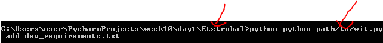

האם הקובץ wit.py (בו נמצאות הפונקציות init וadd) נמצא בתוך תיקיית Etztrubal?
או שפספתי משהו חשוב בהסבר?
לא בהכרח 
שימי לב שהקובץ wit.py הוא לא תיקיית .wit המדוברת
אוקי. כן שמתי לב להבדל ביניהם.
אבל כאשר אני קוראת לפונקציית init, היא תיצור לי את תיקיית wit. באותו נתיב בו נמצא הקובץ wit.py?
לא בנתיב שבו נמצא הקובץ wit.py, אלא כמו שצויין - לפי סביבת העבודה: os.getcwd()
אותו דבר לא? הפקודה os.getcwd() תביא לי את סביבת העבודה בה נמצא הקובץ wit.py לא?
ועוד שאלה, בדוגמת האיצטרובל:
- אם, בעודנו נמצאים בתיקייה Etztrubal, אנחנו נעשה add ל־
dev_requirements.txt– לתיקייה staging_area יתווסף הקובץdev_requirements.
בדוגמא זו קובץ wit.p כן נמצא בתוך תיקייה Etztrubal נכון? אם לא, איך “בעודנו” נמצאים שם? או שאנו יכולים להיות שם (מבחינת הCMD) והקובץ wit.py יהיה בנתיב אחר, כמו בדוגמא הבאה:

היא תביא לך את התיקייה אליה cmd מצביע, ולא בהכרח את התיקייה בה נמצא wit.py
2 לייקים
מתחיל ליפול האסימון…
תודה!
נגיד הקובץ wit.py נמצא אצלך בנתיב: C:\Users\user\something\witproject\wit.py.
ב-cmd, כמו שים אמר את נמצאת נגיד בנתיב (1): C:\Users\Public
כשתריצי את הפקודה שאמרת כשה-cmd מצביע לנתיב (1) - ה-os.getcwd() יחזיר לך את נתיב (1).
מוזמנת לרשום בקובץ:
if __name__ == '__main__':
print(os.getcwd())
3 לייקים